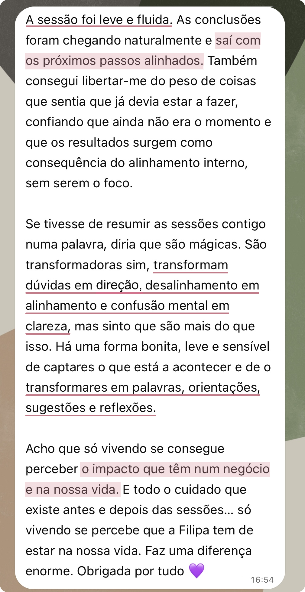

"Transformam dúvidas em direção, desalinhamento em alinhamento e confusão mental em clareza."
— mensagem transcrita de um áudio de uma cliente num acompanhamento


Uma nova forma de te veres a ti, ao teu negócio
e de escolheres como queres ser vista/o
A CEEN é um trabalho individual de análise e orientação para reveres a forma de trabalhar e estar no teu negócio, sem separar essas decisões da vida que queres construir e de quem és, tendo por base a tua energia pessoal única.
Podes chegar com uma questão concreta ou várias áreas que gostarias de rever em conjunto. Enquanto te escuto, presto atenção à forma como falas sobre o negócio, ao que te entusiasma ou retrai, ao peso que possas atribuir a determinadas decisões e às contradições inconscientes que possam surgir.
Esta escuta ajuda-nos a reconhecer crenças, receios e padrões que podem estar a influenciar as tuas escolhas, mesmo quando ainda não os identificas. Relacionamos o que observamos com a realidade do negócio e com aquilo que desejas mudar.
Ajudo-te a reconhecer o que faz sentido manter, reformular ou deixar e apresento-te recomendações concretas para decidires os próximos passos com maior confiança.
Por vezes, o maior desafio não é construir o negócio.
É mudar a forma como te vês e te posicionas nele.
O negócio é o centro da CEEN, mas não é observado separadamente de ti.
A tua identidade, energia, capacidade, desejos e momento de vida ajudam-nos a reconhecer o que ainda te representa e como queres continuar a trabalhar e evoluir.
A CEEN está pensada para ti que és empreendedor, profissional independente ou criador de conteúdos. É para ti que tens um negócio ou uma marca pessoal e crias a partir do teu conhecimento e experiência e queres comunicar através daquilo em que acreditas.
As pessoas escolhem-te pelo teu olhar, pela tua abordagem, pelo teu método, pela forma como entregas o trabalho ou pela tua visão de mundo. Tu és a parte central do valor que o teu negócio ou marca oferece.
Já tens uma atividade em funcionamento, com comunicação, ofertas, clientes ou tentativas de venda. Agora, desejas perceber o que queres continuar a desenvolver, como o apresentar e de que forma o queres entregar, totalmente alinhado contigo.
Quem te acompanha na CEEN
(vem primeiro conhecer-me)
Sem fórmulas alheias
e tentativas de caber em caixinhas!
Talvez sucesso profissional signifique, para ti, crescer, aumentar o rendimento ou chegar a mais pessoas. Talvez signifique ter mais tempo livre, mais autonomia, reconhecimento, impacto ou realização. Ou talvez seja tomar decisões com confiança e comunicar com autenticidade, relacionar-te com o teu trabalho com mais leveza e deixares de viver certas questões profissionais com tanto desgaste emocional.
Podes já ter alcançado resultados que, para ti, representaram sucesso e, ainda assim, sentir que a forma como trabalhas hoje deixou de te representar. Isso não retira valor ao que construíste. Pode apenas indicar que chegou o momento de o reformular para acompanhar a tua evolução.
Na CEEN, não partimos do princípio de que existe algo de errado contigo ou com o teu negócio, nem de que existe uma versão ideal à qual deverias corresponder ou uma fórmula de sucesso que deverias seguir. A melhor estratégia é a que se adequa a ti! E rever o que construíste não retira valor ao teu percurso; mas sim permite-te escolher como queres continuar.
Podes querer alcançar novos resultados e, ao mesmo tempo, mudar a forma como os estás a construir. Estas duas necessidades podem fazer parte do mesmo momento do negócio:
RESULTADOS E DIREÇÃO
COMO ESTÁS NO NEGÓCIO
Nem todas as dificuldades se resolvem com uma nova estratégia.
Por vezes, a dificuldade em cobrar, delegar ou comunicar está intrinsecamente ligada ao que essa decisão significa para ti, não apenas à falta de um plano.
Na CEEN, ligamos as decisões de negócio à pessoa que és e ao que estás a viver, porque cada escolha é também influenciada pelo que desejas, pelo que receias e pelo que estás disponível para sustentar.
A clareza não faz a mudança por ti, mas pode encurtar o tempo que passas a insistir numa direção que te esgota, a adiar decisões ou a tentar resolver apenas no negócio aquilo que também precisa de ser reconhecido em ti.
Quando estás dentro do negócio, pode ser difícil distinguir o que continua a fazer sentido daquilo que manténs por hábito, receio ou expectativa. Ao devolver-te o que reconheço na forma como falas e colocar perguntas sobre o que parece contraditório, ajudo-te a ver diferenças que podem passar despercebidas quando pensas sozinha/o. Não para escolher por ti, mas para que possas reconhecer o que realmente queres continuar a desenvolver.
Este caso mostra como esse trabalho pode mudar uma decisão sobre a oferta:
Rever a oferta é também reconhecer o que já não te representa
Uma cliente chegou à sessão convencida de que queria continuar a apostar em determinados serviços. Racionalmente, pareciam-lhe as opções mais seguras e aquelas que faziam mais sentido manter.
Através das perguntas que lhe coloquei e das devoluções sobre a forma como falava de cada um dos serviços, foi a própria cliente que reconheceu que aquilo que acreditava que "deveria" manter já não correspondia ao que realmente queria desenvolver.
Decidiu concentrar a oferta e a comunicação nos serviços que despertavam mais o seu entusiasmo e, depois dessa mudança, voltou a gerar vendas.
O negócio já não estava a gerar vendas como antes e a cliente distribuía a sua atenção por vários serviços. Alguns pareciam-lhe opções seguras e, por isso, acreditava que queria continuar a apostar neles.
À medida que falava sobre cada serviço, fui colocando perguntas e devolvendo-lhe diferenças, tensões e contradições que surgiam na forma como os descrevia.
Estas devoluções não serviram para lhe dizer quais deveria manter ou deixar.
Funcionaram como um espelho para que pudesse reconhecer, por si própria, que alguns serviços eram sustentados sobretudo pelo hábito, pela segurança e pela ideia de que deveriam continuar por já fazerem parte do negócio.
Essa diferença ainda não era clara para ela antes da sessão.
A cliente distinguiu os serviços que acreditava que "deveria" manter daqueles que queria verdadeiramente continuar a desenvolver.
Decidiu concentrar a oferta e a comunicação nestes últimos e, depois dessa mudança, voltou a receber pedidos e a gerar vendas.
A CEEN não escolheu por ela. Ajudou-a a ver com clareza para poder escolher.
Na prática, a CEEN cruza duas dimensões: o que orienta as tuas escolhas e a forma como essas escolhas se traduzem no negócio.
DIMENSÃO ENERGÉTICA ·
A PESSOA QUE O CONDUZ
Reconhecer o que te mobiliza, retrai ou esgota e como isso influencia as tuas escolhas e o papel que desejas ocupar no teu negócio.
Consoante o que for mais relevante no teu momento, podemos observar a tua energia natural, desejos, crenças e padrões: elementos que influenciam aquilo que escolhes, comunicas e consegues sustentar.
DIMENSÃO ESTRATÉGICA ·
A TRADUÇÃO NO NEGÓCIO
Traduzir essa leitura em critérios, prioridades e recomendações concretas para a próxima fase do teu negócio ou da tua vida.
Consoante as questões ou a profundidade do trabalho, podemos observar ofertas, serviços, preços, posicionamento, comunicação, conteúdos, páginas de vendas, website, formatos de entrega, responsabilidades ou decisões.
Observar sem estruturar pode trazer mais consciência, mas deixar-te sem saber o que fazer com ela. Estruturar sem observar pode levar-te a escolher uma estratégia que não consegues ou não desejas sustentar. É, então, neste diálogo entre energia e estratégia que
a CEEN acontece.
“Nunca ninguém tinha olhado
para o meu negócio desta forma!”
— comentário de uma cliente durante uma Sessão CEEN
Se quiseres aprofundar a abordagem, abre os temas abaixo: como as áreas do negócio se influenciam e como a tua energia entra nas decisões profissionais.
O teu negócio não é apenas aquilo que vendes. É também o lugar que ocupas nele, a identidade que comunica, a estrutura que o sustenta, as relações que cria e o equilíbrio entre o que entregas e o que recebes.
Olhar para o negócio como um sistema é observar, em simultâneo, a pessoa que o conduz, a identidade que o orienta, a estrutura que o sustenta, as relações que cria e as trocas que tornam possível a sua continuidade.
Consoante o teu momento, podemos observar:
Estas dimensões influenciam-se mutuamente: mudar a oferta pode pedir outra comunicação; crescer pode exigir outra estrutura; e uma mudança em ti pode transformar o lugar que queres ocupar no negócio.
Mais esforço não significa necessariamente mais rendimento e aumentar os resultados à custa do teu tempo, da tua vontade ou da tua vitalidade não torna o crescimento sustentável.
Este olhar ajuda-nos a reconhecer as ligações relevantes para decidir o que manter, reformular ou transformar, sem analisar tudo nem procurar uma explicação única.
Na CEEN, energia pessoal não significa apenas disposição ou cansaço. É a disponibilidade que resulta da interação entre dimensões físicas, mentais, emocionais, sociais e subtis e que influencia a tua capacidade de criar, decidir, relacionar-te e assumir responsabilidades.
Uma decisão profissional não depende apenas da análise racional. Também é influenciada pelo que sentes que podes ganhar, perder, provar ou proteger através dela. Por exemplo:
Na CEEN, estes elementos são sempre relacionados com a realidade concreta do negócio e com as escolhas que tens pela frente. Desta forma, aproximamos estratégia, marketing, identidade e intenção.
A CEEN não substitui consultoria técnica nem execução especializada.
Podemos observar ofertas, preços, comunicação, páginas de vendas ou decisões e identificar relações e possíveis alterações. Não estão incluídas auditorias técnicas aprofundadas, planeamento integral, copywriting ou implementação feita por mim.
O meu papel é escutar, questionar, formular hipóteses, ligar pontos e apresentar recomendações concretas. As decisões finais continuam a ser sempre tuas.
"Transformam dúvidas em direção, desalinhamento em alinhamento e confusão mental em clareza."
— mensagem transcrita de um áudio de uma cliente num acompanhamento


Tenho formação (duplo grau de mestrado) em Gestão, Controlo de Gestão, Negócios Internacionais e Estratégia, em instituições de ensino de referência, e experiência nas áreas financeira e de gestão em empresas portuguesas de grande dimensão.
Nos últimos anos, aprofundei o estudo e direcionei o meu trabalho para o comportamento humano, a identidade, a infância, as crenças e os padrões inconscientes, bem como a linguagem simbólica através da qual o inconsciente se expressa. Aprofundei também a visão sistémica aplicada às relações, à liderança e aos negócios.
Este percurso foi consolidado pelo meu próprio processo de desenvolvimento e através do acompanhamento de clientes nos seus processos de autoconhecimento, a compreender crenças e padrões que as afastam de si e a aproximarem-se da sua essência, na forma como se veem, escolhem e vivem.
Hoje, junto estas duas vertentes numa prática que combina capacidade de análise e escuta atenta, com clareza, sensibilidade e frontalidade, e um olhar que vai além.
↑ Voltar a explorar a CEEN desde início"Tu consegues tão bem captar, dirigir, interpretar e transformar em palavras,
em orientações, em conselhos, em sugestões e em reflexões em conjunto."— feedback de uma cliente num áudio durante um acompanhamento comigo
Esta forma de trabalhar faz sentido para ti se…
Neste espaço, o teu negócio
alinha-se à tua energia pessoal!
Os meus clientes chamam-lhe magia.
Eu chamo-lhe alinhamento 🪄
“Essas tuas ferramentas
juntamente com a tua sensibilidade...”
Só mesmo vivendo é que se percebe que a Filipa tem que estar na nossa vida, faz uma diferença enorme, enorme. Essas tuas ferramentas, juntamente com a tua sensibilidade, que é inata, é mesmo uma característica tua, faz com que o teu trabalho também seja muito diferenciado.
Sinto também que cada vez consegues ler-me melhor e eu não queira mais ninguém para me orientar, tanto para o meu negócio, assim como a minha vida pessoal. No fundo, está interligado de várias formas e eu não vejo outra pessoa melhor para me acompanhar e orientar, e a palavra que eu uso muito, recentrar. Obrigada, Filipa, por tudo.
“Os nossos momentos
são para tudo o que vier...”
Os nossos momentos são mesmo para isso, são mesmo para tudo o que vier. E claramente eu preciso da Filipa na minha vida. Sim, eu acho que todos nós precisamos de uma energia da Filipa nas nossas vidas.
“Ter alguém ao meu lado que olha
para mim e para o meu negócio como um todo.”
Aquilo que tu trazes para além de clareza e leveza. Pegando aqui primeiro nestas palavras, eu acho que a leveza tem a ver com o facto de nós não nos sentirmos julgadas, não há certo, não há errado, há uma abertura. Tudo aquilo que possamos vir a dizer, está tudo bem, não há crenças que “Ah, mas estás a pedir muito”, “Olha, mas isso se calhar não é bem assim”, não, isto não existe. Portanto, eu acho que essa questão da leveza vem muito por aí, por não haver julgamento.
Aquilo que tu fazes, para mim, é que tu trazes profundidade sem, usando o teu termo, sem seres assim “woo woo”, sem ficares só nas sensações, não, mas trazes a profundidade. Juntamente com a tua sensibilidade, consegues levar a conversa, aonde é preciso ir, sem que tu saibas de antemão, fazes isto realmente por “Ok, estou a sentir que há aqui uma coisa que precisa de ser olhada”, e desta forma abordas os pontos chaves naquele momento e naquela situação em específico.
Como, por exemplo, na conversa que nós tivemos, de repente estás a abordar uma crença que estava a pedir para ser olhada e estava a pedir para ser quebrada. Portanto, de repente quebra-se uma crença e abre-se um mar de oportunidades e de possibilidades, que para mim fazem todo o sentido, mas que eu não tinha visto, e quem viu foste tu.
“Eu sinto que é mesmo mágico...”
0:00Mas se eu tivesse que resumir assim numa só palavra estas sessões, eu diria que são mágicas porque eu acho que é mais do que transformadoras. Elas são sim transformadoras, ajudam a transformar muitas coisas, de confusão mental em clareza, desalinhamento em alinhamento, mas sim, mas do que serem transformadoras, é mesmo mágico.
Porque sinto que há exatamente a força das energias e que tu consegues tão bem captar e dirigir e interpretar e transformar em palavras, em orientações, em conselhos, em sugestões, em reflexões em conjunto para perceber o que é que ressoa melhor em mim, o que é que eu sinto que está alinhado comigo a cada momento e trazer toda essa consciência de uma forma tão bonita, tão leve e com tanta sensibilidade, lá está, que eu sinto que é mesmo mágico.
Na Sessão, trabalhamos em conjunto durante o encontro e recebes um resumo curto no Notion. No Ciclo, acrescento o meu tempo de análise entre os encontros e preparo uma proposta personalizada para ti e para o momento do teu negócio.
Quero pensar e decidir contigo · Sessão CEEN
Estas frases são apenas exemplos possíveis.
Quero também que possas analisar o que tenho · Ciclo CEEN
Estas frases são apenas exemplos possíveis.
Este formato pode fazer sentido se
procuras esta forma de trabalhar.
Este formato pode fazer sentido se
procuras esta forma de trabalhar.
Não precisas de começar por uma Sessão CEEN para chegares ao Ciclo CEEN.
Podes marcar o Ciclo diretamente se procuras análise e uma proposta personalizada.
"Quase em cada frase havia uma chave a rodar"
Neste testemunho de um acompanhamento, a cliente descreveu o que mudou quando passou a ter mais consciência, ferramentas e apoio para lidar com aquilo que ia surgindo no seu processo de negócio:


250 €
Pensamos em conjunto durante o encontro, para saíres com perspetivas, recomendações e próximos passos.
Não inclui análise posterior nem acompanhamento.
Marcar a minha Sessão CEEN800 € (valor de lançamento outubro)
A Sessão, mais o meu tempo de análise entre os encontros e uma proposta preparada para ti.
Não é acompanhamento contínuo nem revisão de todo o negócio.
Marcar o meu Ciclo CEENNA SESSÃO CEEN
NO CICLO CEEN
O Ciclo CEEN é um processo de análise e direção, não um acompanhamento.
A análise centra-se nos temas e materiais prioritários que for possível aprofundar no tempo de trabalho incluído. O Ciclo não é uma revisão exaustiva de todo o negócio.
Entre as duas sessões, os três dias de partilha e os esclarecimentos que eu possa pedir servem para completar a leitura do negócio e preparar a proposta. Não incluem apoio contínuo para implementar as recomendações ou trabalhar as novas questões que surjam no dia a dia.
Depois da segunda sessão, a entrega do Ciclo fica concluída.
A partir daí, podes avançar autonomamente ou marcar uma nova Sessão CEEN.
Exemplo ilustrativo.
Cada entrega depende do contexto e dos temas trabalhados.
"Ter alguém ao meu lado que olha para
mim e para o meu negócio como um todo."
É no contacto com a experiência real que novas decisões, dúvidas e possibilidades se tornam visíveis. Este é o testemunho de outra cliente sobre o que tem vivido no seu processo comigo:


Podes regressar à CEEN
sempre que precisares
Depois de uma Sessão ou do Ciclo, podes avançar autonomamente ou marcar uma nova Sessão CEEN quando surgirem decisões, dúvidas ou mudanças que queiras trabalhar comigo. Não precisas de definir antecipadamente um percurso nem um número fixo de sessões.
Se reconhecer que o processo beneficiaria de um acompanhamento mais próximo entre sessões, poderei propor-te uma Travessia CEEN: um período definido para partilhares o que surge e receberes o meu olhar ao longo da experiência.
É um formato exclusivo, proposto depois de conhecer a pessoa, o negócio e o momento que está a viver. Não está disponível para marcação direta 🔒
Para pensarmos juntos durante um encontro, escolhe a Sessão CEEN.
Para acrescentar o meu tempo de análise e receber uma proposta preparada para ti, escolhe o Ciclo CEEN.
Ainda tens dúvidas sobre qual é o formato mais adequado?
Envia-me uma mensagem e conversamos.
Não. A CEEN não substitui apoio técnico de gestão, marketing, finanças, contabilidade ou operação. Também não inclui auditorias técnicas, copywriting ou implementação feita por mim. Cruzo o que observo em ti e no negócio com os meus conhecimentos de estratégia e marketing para apresentar possibilidades, critérios e recomendações ajustadas.
Todas as sessões CEEN são online, tanto na Sessão como no Ciclo CEEN.
Não. O negócio pode estar numa fase inicial, em crescimento ou em reorganização, mas precisa de já estar em funcionamento e em contacto com a realidade. É importante que existam ofertas, preços, comunicação, clientes, vendas ou tentativas de venda e decisões concretas que possamos observar.
Não. A dimensão energética está relacionada com aquilo que estás concretamente a viver e que nem sempre é imediatamente visível: atenção, emoções, crenças, hábitos, capacidade e respostas do corpo. Usamos apenas aquilo que fizer sentido para ti.
Vou ajudar-te a reconhecer aquilo que pode não estar claro, apresentar recomendações e sugerir possíveis direções. Não decido nem ajo por ti: as decisões finais e as ações concretas continuam a ser tuas.
Sim, desde que esteja relacionada com a forma como estás a viver, decidir ou ocupar o teu lugar no negócio. Podemos trabalhar identidade, crenças, padrões, receios, visibilidade, dinheiro ou responsabilidade quando estiverem a influenciar as tuas escolhas profissionais.
A Sessão é trabalhar comigo durante o encontro: perguntas, análise e recomendações no momento, com um resumo curto e pontos de ação no Notion em até 5 dias úteis. O Ciclo faz sentido se queres acrescentar o meu tempo de análise entre os encontros e receber uma proposta personalizada no Notion, com recomendações, prioridades e as razões que as sustentam. Ambos têm entrega no Notion, mas só o Ciclo inclui análise entre os encontros e uma proposta com as razões. A escolha depende do tipo de trabalho que procuras, não do número de questões que trazes.
Não. Podes marcar diretamente o Ciclo CEEN se procuras a análise entre encontros e a proposta personalizada.
Não inclui análise nova. A leitura do contexto é breve e acontece antes do encontro, quando necessário. A análise, as recomendações e as decisões são trabalhadas durante a sessão e, em até 5 dias úteis, recebes no Notion um resumo curto do que foi trabalhado e os pontos de ação. Não estão incluídos implementação nem acompanhamento posterior.
Não. A análise incide sobre os temas e materiais prioritários que for possível aprofundar dentro do trabalho incluído. Posso relacionar áreas do negócio, mas a entrega corresponde ao que for efetivamente analisado, não a uma revisão exaustiva de tudo.
Trabalhamos o que for possível no tempo do encontro. Se fizer sentido continuar, podemos considerar outra Sessão ou o Ciclo, quando for útil acrescentar análise de materiais e uma proposta. A decisão é tua.
O Ciclo CEEN não inclui acompanhamento contínuo. Entre as sessões, tens três dias para acrescentar informação relevante. Durante a análise, posso colocar-te perguntas dirigidas ou pedir esclarecimentos para preparar a proposta. Estes contactos servem para completar a leitura, não para acompanhar a implementação ou responder continuamente às questões do dia a dia.
Depois da segunda sessão, a entrega do Ciclo fica concluída. Podes então avançar autonomamente ou marcar uma nova Sessão CEEN para trabalhar outra questão concreta.
Se reconhecer que o processo beneficiaria de acompanhamento mais próximo, poderei propor-te uma Travessia CEEN. É um formato distinto, não incluído no Ciclo, e não está disponível para marcação direta.
Apenas 3 vagas em outubro
Marcar a minha CEEN